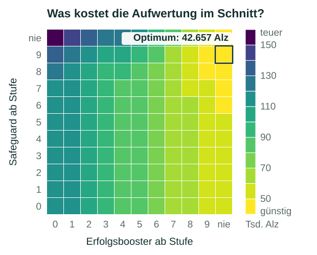
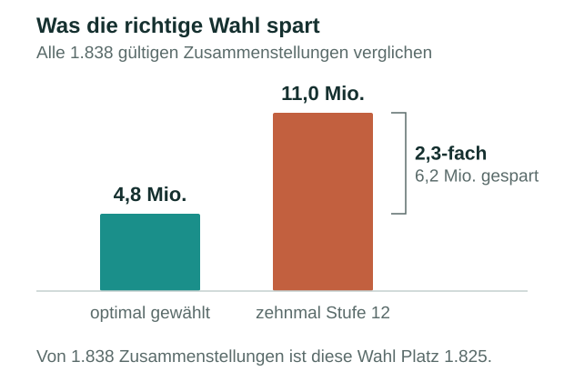
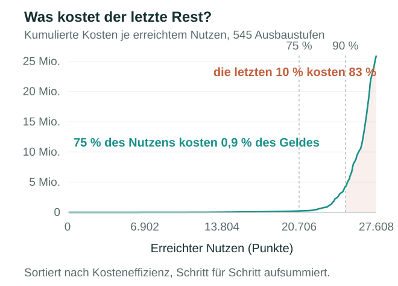
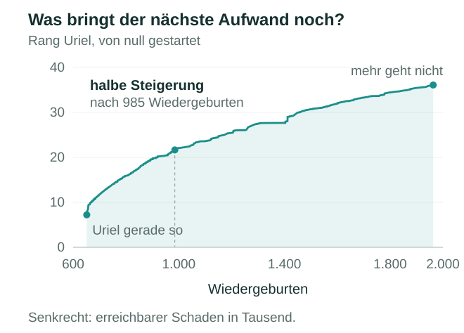
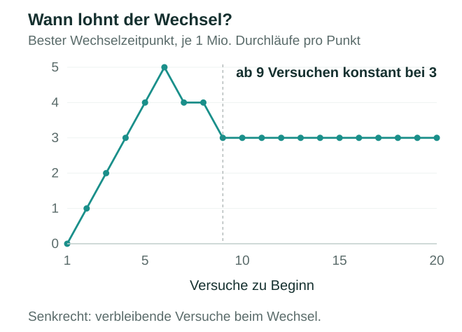

- 3,5× liegen zwischen der teuersten und der günstigsten Strategie
- 1.825von 1.838 so weit hinten landet, wer einfach die beste Variante nimmt
- 0,9% der Ausgaben bringen drei Viertel des Gewinns
- 2,9× so teuer ist die zweite Hälfte der Schadenssteigerung wie die erste
- 3 Bälle vor Schluss wechselt man – egal, mit wie vielen man startet
Warum ich so etwas baue
Weil mich interessiert, was hinter einer Zahl steckt. Wenn ich eine Entscheidung treffen soll und niemand sagen kann, welche Option die bessere ist, baue ich mir das Werkzeug, das es ausrechnet.
Vier der fünf Beispiele stammen aus Cabal Online, einem MMORPG, eines aus Pokémon GO. Spiele sind dafür das ideale Übungsfeld: Alle Wahrscheinlichkeiten und Preise sind messbar, jede Strategie lässt sich beliebig oft durchrechnen, und was zusätzliches Wissen wert ist, lässt sich auf die Spielwährung genau beziffern. Die Methode dahinter ist dieselbe, egal ob es um Geld, Instandhaltung oder ein Investitionsbudget geht.
Fünf Beispiele, jeweils mit der Frage dahinter, dem Vorgehen und dem Ergebnis. Die ersten vier sind Programme, die eine Zahl ausrechnen. Das letzte ist daraus geworden: ein Werkzeug, das jemand anders bedient.
Hauptbeispiel
Ab wann lohnt sich eine Absicherung?
In Cabal Online lässt sich Ausrüstung aufwerten: Ein Schwert geht von +0 bis +20, jede Stufe macht es stärker. Jeder Versuch verbraucht Material und gelingt nur mit einer bestimmten Wahrscheinlichkeit – je höher die Stufe, desto unwahrscheinlicher. Misslingt er, fällt das Stück ein oder zwei Stufen zurück: aus +7 wird +6 oder +5. In diesem Beispiel ist +10 das Ziel.
Ein Safeguard kostet 9.388 Alz und verhindert den Rückfall; bezahlt wird er nur, wenn tatsächlich einer eingetreten wäre. Ein Erfolgsbooster (7.444 Alz) hebt die Erfolgschance um 14,2 Prozentpunkte und wird bei jedem Versuch fällig, auch bei den misslungenen. Ab welcher Stufe lohnt sich welches?
Dieselbe Frage stellt sich in der Instandhaltung, bei Versicherungen und bei jeder Investition mit unsicherem Ausgang.
Vorgehen
Beide Hilfsmittel lassen sich ab einer frei wählbaren Stufe einsetzen – etwa „Safeguard erst ab +6“. Für jedes gibt es elf solcher Schwellen, von „ab +0“ bis „nie“. Zusammen sind das 121 Strategien. Ich habe jede einzelne mit einer Monte-Carlo-Simulation über 50.000 Durchläufe bewertet. Zielgröße sind die erwarteten Gesamtkosten in Alz, um ein Schwert von +0 auf +10 zu bringen.

Ergebnis
Die teuerste Strategie kostet das 3,5-fache der günstigsten. Am günstigsten fährt, wer den Safeguard ab +9 einsetzt und auf Erfolgsbooster ganz verzichtet.
Der Grund liegt darin, wann die beiden bezahlt werden. Der Safeguard kostet nur, wenn tatsächlich ein Rückfall eingetreten wäre – und was er verhindert, wird mit jeder Stufe wertvoller: Ein Sturz von +9 auf +7 bedeutet, zwei teure Stufen noch einmal zu machen. Sein Preis bleibt gleich, sein Nutzen wächst. Daraus wird eine Schwelle.
Der Erfolgsbooster dagegen wird bei jedem Versuch fällig, auch bei denen, die ohnehin gelungen wären. Bei durchschnittlich 21 Versuchen bis +10 summiert sich das schneller, als die höhere Erfolgschance einspart. Die Fläche zeigt außerdem, wie flach das Optimum ist – rund um den besten Punkt ändert sich wenig, weit davon entfernt sehr viel.
Ein zweites Beispiel: eine ganz andere Aufwertung
Bis hierhin ging es um eine einzige Stufenleiter: +0 bis +20. Cabal hat daneben das Extreme Upgrade – eine zweite Aufwertung, die mit der ersten nichts zu tun hat: eigene Stufen, eigenes Material, eigene Regeln. Ein Schwert kann in der einen weit oben und in der anderen ganz unten stehen. Gleich ist nur das Vorgehen: alle Möglichkeiten aufzählen, jede mit ihren erwarteten Kosten bewerten, die günstigste nehmen.
Das Extreme Upgrade hat sieben Stufen, und jede verbraucht Extreme Cores. Für die unteren Stufen zwei, vier oder sechs, ab der fünften jeweils zehn. Jeder Core hat eine von zwölf Stufen, Lv1 bis Lv12, mit eigener Stärke und eigenem Marktpreis. Die Summe der Stärken bestimmt die Erfolgschance – unter 360 ist ein Versuch gar nicht erst möglich. Misslingt er, wird das Schwert beschädigt; ein Reparaturbausatz behebt das mit 50 Prozent Wahrscheinlichkeit. Welche zehn Cores sind zusammen am günstigsten?
| Stufe | Stärke | Preis in Alz |
|---|---|---|
| 1 | 1 | 1.000 |
| 2 | 2 | 800 |
| 3 | 3 | 843 |
| 4 | 4 | 500 |
| 5 | 8 | 7.888 |
| 6 | 10 | 122 |
| 7 | 12 | 139 |
| 8 | 20 | 4.000 |
| 9 | 24 | 12.000 |
| 10 | 36 | 23.500 |
| 11 | 42 | 53.000 |
| 12 | 48 | 83.000 |
Schon an dieser Tabelle sieht man, warum Rechnen hier etwas bringt: Die Preise kommen aus vom Markt und folgen der Stärke nicht. Lv5 ist schwächer als Lv6 und kostet trotzdem das 65-fache. Wer nach Gefühl einkauft, hat keine Chance.
Aus zwölf Core-Stufen lassen sich zehn Cores auf 352.716 Arten zusammenstellen. Davon erreichen nur 1.838 die Mindeststärke von 360 und sind überhaupt zulässig. Eine Simulation braucht es dafür nicht: Der Erwartungswert lässt sich geschlossen berechnen, und 352.716 Fälle lassen sich vollständig durchzählen.
// Erwartete Gesamtkosten bis zum ersten Erfolg.
// p = Erfolgschance dieser Zusammenstellung
// attemptCost = Gebuehr plus Preis der zehn Cores
// repairKitPrice / REPAIR_SUCCESS_PROB = erwartete Reparaturkosten
// je Fehlschlag, weil ein Bausatz nur mit 50 % wirkt
double expectedRepairCost = repairKitPrice / REPAIR_SUCCESS_PROB;
return (attemptCost + (1.0 - p) * expectedRepairCost) / p;
Das Ergebnis widerspricht dem Reflex. Gewonnen hat nicht die stärkste Zusammenstellung, sondern die billigste, die die Schwelle gerade so erreicht: zehnmal Stufe 10, also zehnmal Stärke 36 – zusammen genau 360. Wer stattdessen das Naheliegende tut und die besten Gegenstände nimmt, zehnmal Stufe 12, landet auf Platz 1.825 von 1.838 und zahlt das 2,3-fache.
Stärke über der Schwelle erhöht die Erfolgschance nur wenig und kostet überproportional. Die billigste Zusammenstellung ist die, die die Schwelle gerade so erreicht.
Wie das gewachsen ist
Das Werkzeug ist nicht an einem Abend entstanden. Im November 2024 beantwortete die erste Fassung nur eine einfache Frage: wie viel Material brauche ich im Schnitt? Im Mai 2026 kam die Geldfrage dazu – was kostet mich das eigentlich? Und im August 2026 die eigentliche: welche Strategie ist die günstigste? Die heutige Fassung beantwortet dieselbe Frage auf zwei Wegen, simulativ oder analytisch, je nachdem ob sich der Zustandsraum geschlossen berechnen lässt. Die Entscheidung, wann welcher Weg der richtige ist, war der eigentliche Lernschritt.
Kurz vorgestellt
Wie erreicht man ein Ziel mit den geringsten Kosten?
Cabal hat ein weiteres System, das Myth-System: 78 Nodes, die unabhängig voneinander belegt werden können. Jede Belegung bringt Holy Power und kostet Myth Points – eine eigene Währung dieses Systems. Eine Wiedergeburt bringt insgesamt gut 370 davon. Der Preis ist dabei selbst ein Erwartungswert, denn die Belegung wird gewürfelt – man zahlt so lange, bis sie sitzt. Eine Ziel-Holy-Power ist vorgegeben. Welche Belegung der 78 Nodes ist die billigste?
Ein klassisches Budgetproblem – nur dass die Daten aus der Praxis kommen und nicht aus einer Übungsaufgabe: eine Tabelle mit 2.840 Zeilen.
Ich sortiere alle Möglichkeiten nach Holy Power je Myth Point und arbeite sie von oben nach unten ab. Ein Node wird nur dann neu belegt, wenn die neue Zeile mehr Holy Power bringt als die bisherige; sobald das Ziel erreicht ist, bricht das Programm ab. Das ist ein Greedy-Verfahren – es garantiert nicht das theoretische Optimum, aber es liefert genau die Kurve, auf die es hier ankommt.

Der Testlauf: Ziel 27.500 Holy Power, erreicht nach 545 Schritten mit 27.608 für knapp 26 Millionen Myth Points. Das Ergebnis ist eindeutiger, als ich erwartet hatte.
75 Prozent der Holy Power kosten 0,9 Prozent des Aufwands. Die letzten zehn Prozent kosten 83 Prozent. Wer nicht weiß, wo diese Kante liegt, steckt fast alles in den kleinsten Teil des Ergebnisses.
Die 26 Millionen wären übrigens rund 70.000 Wiedergeburten – dieses Ziel erreicht niemand. Genau das ist der Wert der Kurve: Sie sagt einem nicht nur, wie man hinkommt, sondern auch, wo man vernünftigerweise aufhört.
Daraus geworden
Ein Werkzeug, das jemand anders bedient
Das Programm von eben beantwortet seine Frage einmal und für alle gleich: Wie verläuft die Kurve? Die Frage eines Spielers ist eine andere – ich stehe hier, ich will dorthin, wie weit gehe ich? Dafür genügt kein Programm, das eine Zahl ausgibt. Dafür braucht es etwas, das man bedienen kann.
Für dasselbe Myth-System gibt es auf nipperlug.com bereits einen Planer, und der ist gut. Er kennt aber nur die beiden Ränder: den billigsten Weg zu einem Rang, und das Maximum ohne Rücksicht auf den Preis. Was ein Spieler wissen will, liegt dazwischen und lautet anders. Was bringt mir der nächste Aufwand eigentlich noch?
„Aufwand“ heißt dabei Wiedergeburten – man setzt die Spielfigur zurück und spielt sie wieder hoch, und das bringt Myth Points. Das ist die Größe, in der ein Spieler wirklich rechnet, denn sie kostet Lebenszeit. Und „Nutzen“ heißt nicht mehr Holy Power, sondern Schaden: Wer einmal einträgt, was ihm ein Punkt jedes Angriffswertes wert ist, bekommt von da an Pläne, die auf Schaden hin optimiert sind und nicht auf eine Hilfsgröße.
Vorgehen
Die Grundlage ist dynamische Programmierung über alle 78 Nodes. Für den Schaden reicht sie allein aber nicht. Anders als eine Anzahl ist Schaden eine stetige Größe – man müsste ihn in Stufen runden, und dieser Rundungsfehler summiert sich über 78 Nodes auf; bei 1.500 Stufen lag er am steilen Ende der Kurve noch bei mehreren Prozent. Das Werkzeug rechnet deshalb in zwei Schritten: Erst spannt ein Lagrange-Multiplikator die Kurve grob auf, dann sucht ein exaktes Verfahren zwischen benachbarten Punkten nach. Gegen eine exakte Vergleichsrechnung gemessen bleibt der mittlere Fehler bei 0,2 bis 0,5 Prozent.

Das Beispiel: Rang Uriel, von null gestartet. Ihn überhaupt zu erreichen kostet rund 650 Wiedergeburten. Alles herauszuholen, was das System hergibt, kostet 1.963 – das Dreifache.
Dazwischen verläuft die Kurve sehr ungleich. Die halbe Steigerung ist schon nach 985 Wiedergeburten erreicht. Die zweite Hälfte kostet noch einmal knapp 1.000 – fast dreimal so viel wie die erste. Wo man aussteigt, kann das Werkzeug niemandem abnehmen. Aber es sagt einem, was die Entscheidung kostet.
Bei null anfangen muss dabei niemand. Wer einträgt, was auf seinen Nodes heute schon steht, bekommt nicht den theoretischen Gesamtpreis, sondern den Restaufwand von genau diesem Punkt aus – und die Reihenfolge, in der es sich am meisten lohnt.
Was daraus geworden ist
Eine einzelne HTML-Datei, die offline im Browser läuft: keine Installation, kein Server, keine Datenübertragung. Von außen nachprüfbar sind nur die beiden Ränder des bestehenden Planers – und die stimmen auf den Punkt genau: 9.974 und 151.566.667 Myth Points, beide reproduziert das Werkzeug exakt. Daran habe ich es gemessen; alles dazwischen gab es vorher nicht.
Bedienen lässt es sich auf Deutsch und Englisch – Englisch, weil ich es dem Betreiber von nipperlug.com gegeben habe und der kein Deutsch spricht.
Werkzeug öffnen Öffnet in einem neuen Tab. Eine einzige Datei, rund 552 KB, ohne Installation und ohne Anmeldung – was man einträgt, bleibt im eigenen Browser.
Kurz vorgestellt
Wann tauscht man Ertrag gegen Sicherheit?
In Pokémon GO fängt man ein Raid-Pokémon mit höchstens zwanzig Bällen. Bricht es bis zum letzten Ball aus, geht man ohne Bonbons nach Hause. Vor jedem Wurf darf man eine Beere einsetzen, und die beiden guten unterscheiden sich darin, was sie verbessern. Wann sollte man wechseln?
| Beere | Fangchance | Bonbons |
|---|---|---|
| Silberne Sananabeere | × 1,8 | × 2,33 |
| Goldene Himmihbeere | × 2,5 | × 1 |
Am Anfang lohnt die Silberne: Es sind noch viele Bälle übrig, ein Ausbruch kostet wenig. Gegen Ende lohnt die Goldene, weil ein Ausbruch dann endgültig ist – und null Bonbons sind schlechter als wenige. Irgendwo dazwischen liegt der Wechsel, die Frage ist, wo genau.
Zwei Größen hängen dabei zusammen: Je mehr Bälle man zu Beginn hat, desto später könnte der Wechsel sinnvoll sein. Ich habe deshalb für jede Ballzahl von 1 bis 20 jeden möglichen Wechselzeitpunkt durchgerechnet, eine Million Durchläufe je Punkt. Insgesamt 210 Millionen simulierte Fänge.

Man würde erwarten, dass der beste Zeitpunkt mit der Ballzahl mitwächst. Er tut es nicht. Ab neun Bällen liegt er konstant bei drei verbleibenden – egal ob man mit neun oder mit zwanzig startet. Nur bei sehr wenigen Bällen kippt das Bild: Dann wird fast sofort gewechselt, weil die Gesamtchance ohnehin gering ist und jeder Ausbruch sofort schwer wiegt.
Außerhalb meines Rechners
Dass diese Art von Werkzeug gebraucht wird, sieht man nicht nur bei mir: Auf nipperlug.com gibt es Planer, Datenbanken und Kalkulatoren derselben Art – öffentlich, gepflegt, mit echten Nutzern. Ich bin dort in der Community aktiv, und die Funktion „Compare Upgrades“ im dortigen Schadensrechner geht auf mein Konzept zurück: Sie sortiert mögliche Verbesserungen nach Kosteneffizienz statt nach Wirkung allein. Umgesetzt hat sie der Betreiber der Seite, die Namensnennung steht dort.
Kontakt
Alle gezeigten Auswertungen stammen aus eigenen Programmen in Java und Excel, die Daten aus Cabal Online und Pokémon GO. Die Diagramme sind aus deren Ausgaben erzeugt.
Stand: Oktober 2026